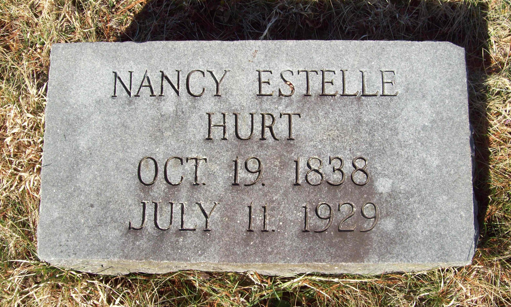

Nancy Estelle Hurt
19 October 1837 – 11 July 1929
Hurt line · Raleigh County, West Virginia
Profile status: SUPPORTED
Quick Facts
Born
19 October 1837, Virginia SUPPORTED (her 1929 West Virginia death certificate, File No. 10555, gives date of birth 19 October 1837 and age 91 years, 8 months, 22 days; the 1850 census agrees. Her gravestone reads 1838 and the 1880 census gives her age as 36, pointing to about 1844 — the disagreement is recorded, not smoothed over)
Died
11 July 1929, Warden, Raleigh County, West Virginia DOCUMENTED (her death certificate, File No. 10555, read with my own eyes: place of death Raleigh County, town Warden; attended 19 June to 11 July 1929; informant her son J. E. Hurt)
Buried
Wildwood Cemetery, Beckley, Raleigh County, West Virginia SUPPORTED (her death certificate names the burial place Wildwood, burial 12 July 1929, undertaker Rose Funeral Home, Beckley; Find a Grave memorial 126672945 confirms Wildwood Cemetery, Beckley)
Married
Never married, so far as any record shows SUPPORTED (the 1880 census lists her as single, head of household; her death certificate leaves the husband/wife field blank; no marriage record for her has ever been found. The father of her children is unknown)
Residence
Raleigh County, West Virginia, in the Town District community around Beckley; her death certificate gives her residence as Callaway Heights SUPPORTED
Occupation
Keeping house (1880 census); her death certificate gives her occupation as "old age"
Religion
No religion recorded in the research folder for her
Military
No military service
Immediate Family
Parents
Roland Hurt SUPPORTEDElizabeth Lawson SUPPORTEDHer death certificate names her father Roland Hurt and leaves her mother blank; the 1850 Patrick County census shows a Nancy, 13, in Roland Hurt's household, and compiler worksheets in the Smith-Rife Collection list her among Roland Hurt × Elizabeth Lawson's children. The family couple profile grades her father as probable and her mother as supported: likely, and consistent everywhere, but no single record names both parents. Their own profile is built at their turn. Find a Grave gives her mother as "Elizabeth Ann Dawson Hurt" — that variant is not adopted here.
Marriage
Never married, so far as any record shows. The father of her children is unknown: her children's own records say "don't know" or leave the space blank, and no marriage record for her has ever been found.
SUPPORTEDIn November 1875 she conveyed her inherited interest in Roland Hurt's Beckley lot to John Mellon for $40, signing alone. The unknown father of her children is one of this family's genuine brick walls: the live paper routes are the children's original Social Security applications (the free indexes name no parents) and Raleigh County bastardy and overseers-of-the-poor records for 1873–1881.
Children
Minnie Mae Hurt Smith (born about 1868; married Jackson Smith 21 October 1891; died 30 October 1927)
SUPPORTEDAnnice Irene Hurt (born about 1873; married Charles Henry Bailey)
SUPPORTEDIra Jay Hurt (born about 1876; married Cora Alice Warden; died 1954)
SUPPORTEDWilliam W. Hurt (born about 1877; untraced after 1880)
UNPROVEDJames Emmette Hurt (14 March 1879 – 24 November 1955; married Edna Bailey)
DOCUMENTED — the direct line
Oligea B. Hurt (born May 1880; untraced after 1880)
UNPROVEDHer children are known from the 1880 household and later records. William and Oligea may be the children of Emma Hurt, a 23-year-old "cousin" in the same household, rather than Nannie's — the original census image's relationship column has not been checked. None of the children's records names their father. Geni lists only the four linked children; William and Oligea are carried from the research folder, unlinked. Geni gives exact dates where the folder gives approximate ones (Minnie Mae 4 November 1868; Annice 1874; Ira Jay 15 June 1876, died 25 July 1954) — those are tree-level dates, noted here, not adopted on the card. Her son James's page spells the youngest "Olga B."; the folder's spelling is Oligea.
Siblings
Elizabeth Ellen Hurt (1845–1902)
SUPPORTEDDicey Lurenda Hurt (1847–1880)
SUPPORTEDAs listed on Geni — the only siblings shown in her Immediate Family there. Her Ancestry tree lists eleven siblings, including a second Nancy (1829–) and two Elizabeths (1835– and 1842–); that list is noisy and duplicated and is not used here.
On Family Tree Sites
Life Timeline
19 October 1837 · age 0
Born, Virginia SUPPORTED (her death certificate gives this date and age 91 years, 8 months, 22 days; her gravestone reads 1838 and the 1880 census points to about 1844)
1850 · age 12–13
Shown as Nancy, 13, in Roland Hurt's household, Northern District, Patrick County, Virginia SUPPORTED (1850 census)
1860 · age 22–23
Residing in the vicinity of Beckley, Raleigh County, Virginia SUPPORTED (1860 census)
November 1875 · age 38
Conveyed her inherited interest in Roland Hurt's Beckley lot to John Mellon for $40, signing alone SUPPORTED (Raleigh County Deed Book 2, pp. 139–140; the deed-book page image itself has not yet been pulled)
1880 · age 42–43
Single, head of household, keeping house, with six young Hurts in the home SUPPORTED (1880 census; the original image's relationship column has not been checked)
11 July 1929 · age 91
Died, Warden, Raleigh County, West Virginia DOCUMENTED (her death certificate, File No. 10555)
12 July 1929
Buried, Wildwood Cemetery, Beckley SUPPORTED (her death certificate: burial Wildwood, 12 July 1929, undertaker Rose Funeral Home, Beckley; Find a Grave memorial 126672945)
Life Story
Nancy Estelle Hurt — called Nannie all her life — was born 19 October 1837 in Virginia, the daughter of Roland Hurt and Elizabeth Lawson. The name "Estelle" appears in no record of her lifetime: her death certificate reads "Nannie E. Hurt," and the 1880 census calls her Nannie. It is the family's name for her, and the one the working line carries — and it is the name carved on her marker at Wildwood Cemetery, which reads "NANCY ESTELLE HURT / OCT. 19. 1838 / JULY 11. 1929." Her birth year is genuinely conflicted: her death certificate's age (91 years, 8 months, 22 days) computes to 19 October 1837 and the 1850 census agrees, but her gravestone reads 1838, and the 1880 census gives her age as 36, pointing to about 1844. This page carries 1837, with the disagreement recorded rather than smoothed over.
Nannie never married, so far as any record shows. She raised her children in Raleigh County, in the Town District community around Beckley. The 1880 census lists her as single, head of household, keeping house, with six young Hurts in the home. In November 1875 she conveyed her inherited interest in Roland Hurt's Beckley lot to John Mellon for $40, signing alone. Her six children were Minnie Mae, Annice Irene, Ira Jay, William W., James Emmette — the direct line — and Oligea B. None of the children's records names their father, and no marriage record for her has ever been found. The unknown father of her children is one of this family's genuine brick walls.
She died 11 July 1929 at Warden, Raleigh County, aged 91, and was buried the next day at Wildwood Cemetery, Beckley. Her death certificate — informant her son James Emmette — names her father Roland Hurt and leaves her mother blank, and gives her occupation as "old age." No portrait of Nannie has been found; her marker is the picture shown here. A second view of the same marker is filed in the research folder.
Sources and Evidence
- West Virginia death certificate, Nannie E. Hurt, File No. 10555, Series No. 176 (image read with my own eyes from the Find a Grave memorial photograph): place of death Raleigh County, town Warden; residence Callaway Heights; date of birth 19 October 1837; age 91 years, 8 months, 22 days; birthplace Virginia; father Roland Hurt; mother's maiden name and parents' birthplaces left blank; occupation "old age"; cause of death aortic regurgitation; attended 19 June to 11 July 1929; died 11 July 1929 at 11:30 PM; burial Wildwood, 12 July 1929; undertaker Rose Funeral Home, Beckley; informant J. E. Hurt DOCUMENTED
- 1850 United States census, Northern District, Patrick County, Virginia: Nancy, 13, in Roland Hurt's household SUPPORTED
- 1860 United States census, vicinity of Beckley, Raleigh County, Virginia: Nancy Hurt SUPPORTED
- 1880 United States census, Raleigh County, West Virginia: Nannie Hurt, single, head of household, keeping house, with six young Hurts in the home (the original image's relationship column has not been checked) SUPPORTED
- Raleigh County Deed Book 2, pp. 139–140, November 1875: Nannie Hurt conveys her inherited interest in Roland Hurt's Beckley lot to John Mellon for $40, signing alone (the deed-book page image itself has not yet been pulled) SUPPORTED
- Smith-Rife Collection of New River Genealogy (FamilySearch), Hurt worksheets, read October 2026: Nannie is listed among Roland × Elizabeth's children, but no husband, no children, and no father for her children are named — a documented negative SUPPORTED
- Find a Grave memorial 126672945, Nancy Estelle "Nannie" Hurt: born 19 October 1838, Patrick County, Virginia; died 11 July 1929 (aged 90), Warden, Raleigh County, West Virginia; buried Wildwood Cemetery, Beckley; parents Roland Hurt (1801–1860) and Elizabeth Ann Dawson Hurt (1807–1857); children James Emmette, Minnie Mae, Annice Irene, and Ira Jay; no spouse listed. The memorial's 1838 birth year follows the gravestone; this page follows the death certificate's 1837. The "Dawson" variant for her mother's name is not adopted SUPPORTED
- Geni profiles, click-verified 4 November 2026: Nancy Estelle Hurt (born 19 October 1837, Virginia; died 11 July 1929, Raleigh County; daughter of Roland Hurt and Elizabeth Lawson; mother of Minnie Mae Smith, Annice Irene Hurt, Ira Jay Hurt, and James Emmette Hurt; no spouse; no father named for any of her children) SUPPORTED
- Ancestry tree "Tricia's Shamblen/McKinney Family Tree" (tree 44342901), Nancy Estelle Hurt (person 6189644740): born 1838, Virginia; died 1929, Raleigh; burial given as Crab Orchard Cemetery, Beckley; father John Roland Hurt (1800–1860); mother Elizabeth Lawson (1805–1857); no spouse; children James Emmet, Ira Jay, Minnie May, and Annie. The burial claim is refuted by the Find a Grave memorial itself (Wildwood); the 1838 birth year follows the gravestone; the eleven-sibling list is noisy and duplicated and is not used SUPPORTED
Research Notes and Open Questions
- Grades on this page: DOCUMENTED means an original record was read (her death certificate, read with my own eyes); SUPPORTED means a claim attested by filed research — censuses, the deed reference, the Smith-Rife worksheets, Geni and Find a Grave checks — but not by a register read here; UNPROVED means a claim carried from the research folder with no corroboration found.
- Birth year: three-way. Her death certificate gives 19 October 1837 with age 91 years, 8 months, 22 days, and the 1850 census agrees; her gravestone reads 19 October 1838; the 1880 census gives her age as 36, pointing to about 1844. This page carries 1837, the death-certificate date, with the disagreement recorded.
- Name: her death certificate reads "Nannie E. Hurt" and the 1880 census calls her Nannie. "Estelle" is the family's name for her, carried by the working line and carved on her marker. Her son James's page does not use "Estelle" for her; this page's title uses the working-line name and explains it here.
- Parentage: her death certificate names her father Roland Hurt and leaves her mother blank. The 1850 census household and the Smith-Rife worksheets support Roland Hurt × Elizabeth Lawson as her parents, but no single record names both parents — the family couple profile grades her father as probable and her mother as supported, and this page keeps that honesty in the Parents note.
- Burial: Wildwood Cemetery, Beckley, per her death certificate (burial Wildwood, 12 July 1929) and Find a Grave memorial 126672945. Her Ancestry tree's Crab Orchard Cemetery claim is refuted by the memorial itself. Her FamilySearch profile's pre-existing Wildwood entry is now confirmed at Find a Grave level.
- Children's father: unknown, and a genuine brick wall. Her children's records say "don't know" or leave the space blank; the Smith-Rife worksheets name no father for her children; Geni names no father for any of them. The live paper routes are the children's original Social Security applications (the free indexes name no parents) and Raleigh County bastardy and overseers-of-the-poor records for 1873–1881.
- William W. and Oligea B.: they appear only in the 1880 household and are untraced after 1880. They may be the children of Emma Hurt, a 23-year-old "cousin" in the same household, rather than Nannie's — the original census image's relationship column has not been checked, so the question stays open and both are carried unlinked.
- Geni exact dates: Geni gives Minnie Mae 4 November 1868, Annice 1874, and Ira Jay 15 June 1876 (died 25 July 1954) where the folder gives approximate years. Those are tree-level dates, noted on the Children card, not adopted.
- WikiTree: she is carried as Unknown-495225 because her maiden name is unproved there, and its biography prose still says she was born in 1838 (the structured date was corrected to 1837 in October 2026).
- Photographs: no portrait of Nannie has been found. Her marker is the picture shown here (the 2017 view); a second view of the same marker (2014) is filed in the research folder but not shown, as it is the same stone. Her death certificate image is filed in the research folder and cited above, not shown as a picture. The two Minnie Mae Hurt Jackson Smith photographs in the research folder are of her daughter, not of Nannie, and are not shown here. Three place photographs in the folder (Patrick County courthouse, Raleigh County courthouse, Beckley Main Street) are not shown.
- Open items: the original 1880 census image (relationship column for William and Oligea); the 1875 deed-book page image; the children's original Social Security applications; Raleigh County bastardy and overseers-of-the-poor records for 1873–1881.
- Genes Reunited is deferred to a later pass, so no Genes Reunited tile is shown here.
- The family couple profile's research-folder link pointed to a folder that no longer exists; this page links the live research folder.